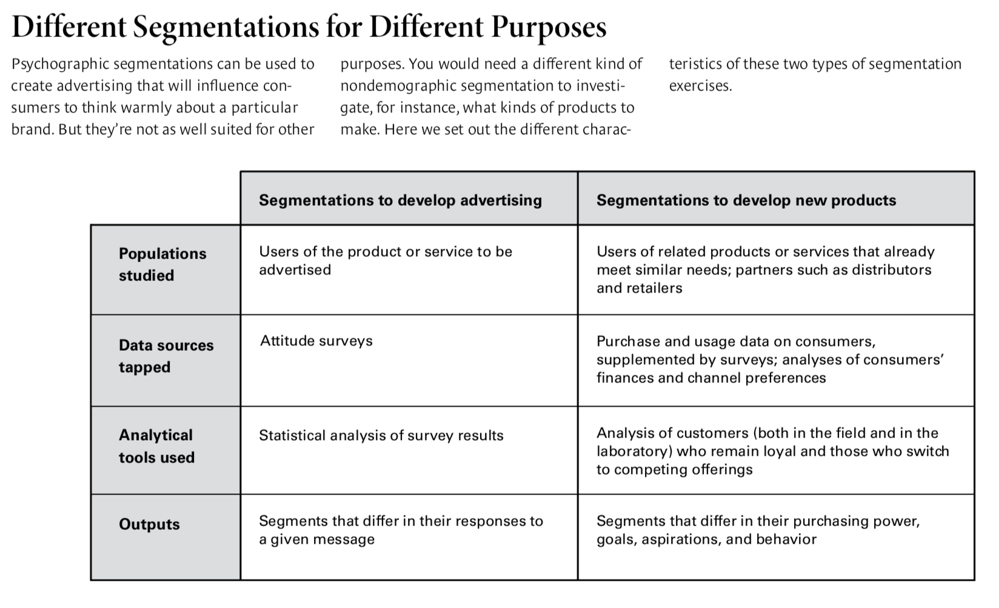
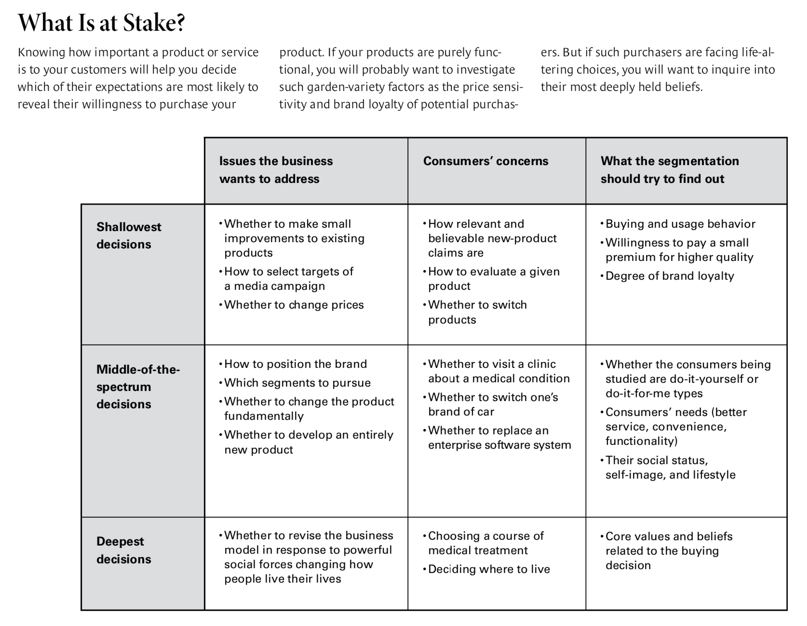

by Daniel Yankelovich and David Meer
There are many different kinds of people, and they display about as many different buying patterns. That simple truth is well understood by those responsible for market research, product development, pricing, sales, and strategy. But they haven’t been getting much help from a venerable technique—market segmentation—which, if properly applied, would guide companies in tailoring their product and service offerings to the groups most likely to purchase them. Instead, market segmentation has become narrowly focused on the needs of advertising, which it serves mainly by populating commercials with characters that viewers can identify with—the marketing equivalent of central casting.
This is hardly the state of affairs we anticipated 40 years ago when one of us introduced the concept of nondemographic segmentation in HBR as a corrective to the narrow reliance on purely demographic ways of grouping consumers. In 1964, in “New Criteria for Market Segmentation,” Daniel Yankelovich asserted that:
The idea was to broaden the use of segmentation so that it could inform not just advertising but also product innovation, pricing, choice of distribution channels, and the like. Yet today’s segmentations do very little of this, even though markets and media are, if anything, even more fragmented today than they were in 1964 and consumers even more diverse and accustomed to following their own tastes and impulses.
Segmentation can do vastly more than serve as a source of human types, which individually go by such colorful monikers as High-Tech Harry and Joe Six-Pack and are known collectively by the term “psychographics.” Psychographics may capture some truth about real people’s lifestyles, attitudes, self-image, and aspirations, but it is very weak at predicting what any of these people is likely to purchase in any given product category. It thus happens to be very poor at giving corporate decision makers any idea of how to keep the customers they have or gain new ones.
The failings of psychographics, however, and the disappointments it has produced in its users, should not cast doubt on the validity of careful segmentation overall. Indeed, marketers continue to rely on it, and line executives increasingly demand segmentations that the whole enterprise can put into action. Because of the technique’s underlying validity, and managers’ continuing need for what it can do, there’s good reason to think that segmentation’s drift from its original purpose and potency can be halted. Good segmentations identify the groups most worth pursuing—the underserved, the dissatisfied, and those likely to make a first-time purchase, for example. They are dynamic—they recognize that the first-time purchaser may become underserved or dissatisfied if his or her situation changes. And they tell companies what products to place before the most susceptible consumers.
In this article, we’ll describe the elements of a smart segmentation strategy. We’ll explain how segmentations meant to strengthen brand identity and make an emotional connection with consumers differ from those capable of telling a company which markets it should enter and what goods to make. And we’ll introduce a tool we call the “gravity of decision spectrum,’’ which focuses on the form of consumer behavior that should be of greatest interest to marketers—the relationship of consumers to a product or product category, not to their jobs, their friends, their family, or their community, all of which lay in the realm of psychographics.
The years after World War II were marked by extraordinary innovations in consumer products—transistor radios, disposable diapers, razor cartridges, pleasant-tasting sugarless colas, among them. For products so groundbreaking and widely desired, advertising did not have to do much more than announce their existence and describe their dazzling features.
By the early 1960s, however, consumers were becoming less predictable in their buying habits: Many people without much education had become affluent; others with sophisticated tastes had become very price conscious. As a result, tastes and purchasing patterns no longer neatly aligned with age and income, and purely demographic segmentations lost their ability to guide companies’ decisions.
As time went on, product introductions remained frequent, but they increasingly amounted to refinements of existing offerings that had originally answered real consumer needs but now merely catered to mild preferences. With ever more trivial improvements to report on, and few ways to distinguish a client’s product from the competition’s, advertising grew boring and bored with itself. Gradually, the focus of creative departments shifted from the product to the consumer: If, by the 1970s, products had become less distinctive, people seemed to be bursting with unprecedented variety.
One way companies found to convince particular groups of consumers that a product was perfect for them was to place in the advertising message a person whom they resembled or wished they did. Another way, which followed from the consumer orientation of the first, was to emphasize the emotional rather than the functional benefits products offered—pride of ownership, increased status, sex appeal. Cake mixes to which a fresh egg had to be added, for example, may have tasted no better than earlier versions containing powdered egg. But they sold well because the extra step allowed the preparer to feel she was fulfilling a wife’s traditional domestic role. In contrast to breakthrough products—such as an effective overthe-counter dandruff shampoo—that addressed intense unmet needs, ordinary third-generation products had to find customers who were already and especially susceptible to their allure. Since the attraction was based on things like status, it made sense to fashion segments reflecting the personal characteristics and lifestyles of the target consumers. As competitors increased the speed and skill with which they could copy or reengineer products, the functional dimension of existing offerings became less compelling. Ironically, by the mid-1970s, belief in the power of imagery to stimulate sales of dull items may have begun to take pressure off product developers to come up with products and services displaying genuinely innovative technology and fresh design, thus aggravating the problem.
Two concurrent developments gave this new emphasis on the consumer’s self-conception, emotions, and personality an extra measure of rigor. Social scientists began to apply their modes of analysis to business problems, and business executives, confused by the fragmentation of the mass audience and the speed with which tastes were changing, welcomed their insights. Using attitudinal indicators similar to those elicited by personality tests, psychologists carved out marketing segments based on their members’ shared worldview. Those early segments were populated with the Inner-Directed, Traditionalists, Hedonists, and the like.
In 1978, Arnold Mitchell and his colleagues at the Stanford Research Institute launched the Values and Lifestyles (VALS) program, a commercial research service, which was soon retained by scores of consumer product companies and advertising agencies. VALS drew heavily on frameworks developed by Harvard sociologist David Riesman, coauthor of The Lonely Crowd, and Brandeis psychologist Abraham Maslow, who posited the now well-known hierarchy of needs. VALS classified individuals according to nine enduring psychological types. An individual consumer’s behavior, the theory went, could in turn be explained by his or her correspondence to one of those types. VALS and similar models soon turned psychographics into the most accepted mode of segmentation. Not surprisingly, it was embraced by advertising departments and agencies, which appreciated a certifiably scientific technique whose stock-in-trade was inventing characters, just as they themselves had been doing for some time.
Psychographics, it should be said, proved to be effective at brand reinforcement and positioning. The Pepsi Generation campaign of decades ago, for example, did coalesce a wide assortment of consumers into a group that identified with the youth culture emerging at the time. But even though campaigns built on psychographics are good at moving viewers emotionally, the characteristics and attitudes that such ads invoke are simply not the drivers of commercial activity. Those tend to be things like purchasing history, product loyalty, and a propensity to trade up, all of which are informed by attitudes and values that lead consumers to view particular offerings differently. What’s more, psychographic segmentations have done little to enlighten the companies that commission them about which markets to enter or what kinds of offers to make, how products should be taken to market, and how they should be priced.
Despite its disappointing performance, market segmentation is still widely used. In 2004, for example, when Marakon Associates and the Economist Intelligence Unit surveyed 200 senior executives of large companies, 59% of them reported that they had conducted a major segmentation exercise during the previous two years. Yet the evidence suggests it’s not a very effective tool: Only 14% of the executives said they derived real value from the exercise.
What happens when a company attempts to apply a segmentation appropriate for developing ad campaigns to product development or pricing decisions? Consider the experience of a company we’ll call HomeAirCo, a leading manufacturer and installer of home heating and cooling systems. The chief marketing officer, after less than a year in that position, commissioned a respected consumer research company skilled in statistical analysis to conduct an expensive segmentation study with input from HomeAirCo’s advertising agency. The agency was able to create an entertaining campaign featuring characters based on five typologies faithfully reflecting the interests and viewing habits of the members of each segment. One, for example, portrayed a Traditionalist male trying to work on his own heating system and botching it while his wife nagged him to call HomeAirCo; another showed a woman doing yoga in an ideal environment because she had a HomeAirCo system. But every segment had the same number of HomeAirCo customers in it, leaving the firm at a loss to know which groups would be most likely to want to upgrade their temperature control systems. The segmentation’s many oversights included a failure to identify buyers of older homes in affluent neighborhoods who, the firm’s own anecdotal experience suggested, would probably be the most likely purchasers of such a system.
The fact is that even the most memorable advertising, if based on a crudely drawn segmentation, will do little to spur sales or garner market share. The recent “Catfight’’ campaign for Miller Lite, for example, featuring mudwrestling supermodels, certainly made an impression on the young, male segment it was intended to reach, but sales of that brand of beer did not increase. As it happens, there is a segment of light-beer drinkers that would gravitate to Miller Lite if only its members knew it had fewer carbohydrates than Bud Light. How do we know? A Miller campaign that told them so did indeed increase sales.
If meaningful segmentations depend on finding patterns in your customers’ actual buying behavior, then to construct one properly, you need to gather the relevant data. Depending on the question your exercise is ultimately aimed at answering, you would want information about, say, which benefits and features matter to your customers. Or which customers are willing to pay higher prices or demand lower ones. Or the relative advantages and disadvantages customers identify in your existing offerings. You’ll also need data on emerging social, economic, and technological trends that may alter purchasing and usage patterns.
Many companies capture this information routinely. If yours does not, you can use qualitative research to explore underlying motives and needs propelling current purchases and use quantitative research to understand competitive strengths and vulnerabilities. You can reexamine the sales data you already have to reveal the hidden patterns in customers’ behavior. And you can retain trend-tracking services.
Armed with such data, you can then fashion segments that are both revealing and applicable. Such segments will:
Let’s consider each aspect in turn.
What are we trying to do? When companies change marketing chiefs, a new segmentation is rarely far behind. The new CMO often uses a segmentation exercise as a way to put his or her stamp on the business. Unfortunately, few marketing chiefs know or have thought about which of their company’s strategic decisions would benefit from the guidance of a segmentation. For a traditional brokerage house, for instance, the main strategic challenge might be how to reduce customer defections to discount brokers. For a personal-care products company, it might be how to extend a strong soap brand into deodorants. And for a fast-food chain, it might be whether to come up with healthier menu alternatives. Segmentations designed to shed light on these questions won’t try to explore the personalities of customers; they will try to identify groups of potentially interested or susceptible customers sufficiently numerous and lucrative to justify pursuit. Subsequent strategic moves will, of course, call for new and different segmentations.
Which customers drive profits? To be valid, a segmentation must identify groups that matter to a company’s financial performance. To start, companies can rank their own customers by profitability so as to concentrate the right amount of attention on them. But to grow revenues, a company should understand what makes its best customers as profitable as they are and then seek new customers who share at least a couple of those characteristics. For instance, a luggage company whose soft but durable carry-on bags earn its highest margins might notice that the majority of the people who buy the bags are international flyers. It would therefore pursue other international travelers as potential customers.
To understand how important this question is, consider the experience of one leading bank with a large wealth management business. The bank had become concerned that its overall business was suffering from low rates of growth and a stagnant market share. Its existing segmentation sorted customers according to the level of employee that served them—relationship manager, senior branch personnel, or junior branch personnel—which mostly depended on customer assets and income. Relationship managers had the most profitable customers, and so forth. However, the bank knew next to nothing about what might distinguish one relationship-manager customer from another.
The bank decided to go beyond what it knew about its existing customer base and acquire market research on the lifetime value of wealthy prospects. The research was of three types:
The segmentation that resulted differed markedly from its predecessor. Every component of the three broad drivers of profitability contributed to an understanding of lifetime value. For instance, the new segments identified, such as Young Families, revealed high variations in profitability even in the existing high-profit segment. Equipped with this information, the bank was more willing to embark on the expensive task of tailoring offerings to potential clients, since it had greater confidence that the effort would turn out to be economically worthwhile. Three segments it discovered—On Their Way, Established Families, and Retirement Planners—contributed almost no profit, even though they accounted for half the customer base. Yet many of the individuals who fell into those segments had been assigned to relationship managers. The bank acted quickly to reduce the cost of servicing those people by reassigning them to more junior branch personnel, to call centers, or to the Web.
Which attitudes matter to the buying decision? Even though segmenting customers according to immutable personality traits rarely bears much fruit, there is a place for examining people’s lifestyles, attitudes, self-image, and aspirations. They should be explored, as the bank did, in a context that is directly related to the product or service under study. Unlike purely psychographic segments, these characteristics can be expected to change along with the customers’ values and environment.
What are my customers actually doing? While relevant attitudes, values, and expressed preferences can bring color and insight to a segmentation, they lack the predictive power of actual purchase behavior, such as heaviness of use, brand switching, and retail-format or channel selection. If you want to understand how a consumer would respond to products or features that have not yet been introduced, you can elicit the next best thing to actual behavior by creating laboratory simulations to which special analytic techniques can be applied. One of them, called “conjoint analysis,” involves presenting consumers with combinations of features. It then asks the consumers how willing they would be to purchase the product in question if particular attributes were added or removed, or if the price changed.
Here’s an example of how it works: A pet food manufacturer gave consumers an opportunity to design their ideal pet food container. The consumers in the test saw on their computer screens a generic package to which they could drag and drop features they valued, such as a resealable opening and a handle attached to the 25-pound size. They were next asked how much more they would pay for products containing different combinations of such features. The consumers were then segmented according to their degree of price sensitivity and desire for convenience. On this basis, the company could redesign its packaging with added features that would maintain existing customers and attract new ones. It could also jettison features whose cost would have required charging too high an overall price.
Will this segmentation make sense to senior management?
Modern marketing practitioners view their field as outward facing—that is, focused on listening and communicating to consumers and markets. In fact, marketing may do itself harm by failing to make itself understood by its internal constituency: senior management. As marketing has become more scientific and specialized, its practitioners have increasingly turned to advanced statistical techniques for dissecting segments into ever finer slices containing improbable combinations of traits. The masters of these techniques are often tempted to flaunt their technical virtuosity instead of defining segments that make intuitive sense to senior managers. If the segments seem inconsistent with managers’ long experience, and managers cannot grasp how they were derived, the research they yield is unlikely to be accepted and applied.
One financial services company found this out the hard way. The firm, which develops investment products sold by third-party investment advisers, wanted a bigger role for itself in asset management, a service usually confined to wealthy investors. So it created a full-service offering designed to accommodate smaller investors. The challenge the company faced was to find out which kinds of advisers would be most likely to recommend the service to this new category of clients. Unfortunately, the advisers’ existing classifications—national broker/dealer, regional broker/dealer, bank officer, and independent— revealed differences in recommendation patterns too minor to be meaningful.
The company therefore decided to segment its investment advisers in a more meaningful way—according to the kinds of recommendations they made to their clients. At first, the firm took an approach that was statistically powerful but highly complex. It developed profiles of typical investors based on their age, assets, risk tolerance, and the like. Then in a survey it asked the advisers to select a mix of investments suited to each customer profile. The statistical analysis teased out the underlying investment style of each adviser and then grouped together those with like patterns. Some advisers, for example, rarely recommended individually traded stocks, while others made stocks the foundation of their clients’ portfolios.
Although the segmentation was mathematically sound, management did not trust its findings. For one thing, the segmentation relied heavily on whether advisers received fees or commissions, a distinction the statistical analysis determined was important. Since the new product was to be fee based, however, the commission-based segments would be largely irrelevant. So the senior managers could not understand why a segmentation along those lines had been made. Perhaps they would have accepted the study if they had been able to understand how its conclusions had been reached. But the study’s reliance on esoteric statistical procedures foreclosed that possibility. If nothing else, the managers charged with applying the study’s findings worried that they would lack answers for top management in the event the segmentation failed.
The in-house marketing science team and the consulting firm assisting it decided to recast the segmentation using simple criteria, not statistics. First, the advisers were grouped on the basis of the average net worth of their clients. And then they were grouped according to whether their clients’ investments were actively managed. The result was four segments rated on two dimensions. We list them here by internal title in descending order of client wealth and portfolio activity.
The Upscale Coaches, it turned out, were the most liable to consider the new assetmanagement product. The Mass-Market Coaches also showed some potential. The segments bracketing those two had almost no potential. In subsequent interviews, the Active Investors confessed they viewed the company developing the new product as a competitor offering a service uncomfortably close to their own. The Product-Oriented segment had the opposite objection: Their clients were not interested in having anyone actively manage their assets. But the new product could complement the service that
the two middle groups provided without threatening to replace it. In other words, the more passive managers of high-net-worth clients and the more active managers of low-networth clients were found to be the two groups worth targeting, a conclusion management understood and unhesitatingly accepted.
Can our segmentation register change?
Segmentations are viewed by too many of their sponsors as onetime, go-for-broke efforts to provide a comprehensive portrait of customers that can inform all subsequent marketing decisions. In our view, segmentations should be part of an ongoing search for answers to important business questions as they arise. Consequently, effective segmentations are dynamic—in two senses. First, they concentrate on consumers’ needs, attitudes, and behavior, which can change quickly, rather than on personality traits, which usually endure throughout a person’s life. Second, they are reshaped by market conditions, such as fluctuating economics, emerging consumer niches, and new technologies, which in today’s world are evolving more rapidly than ever. In short, effective segmentations focus on just one or two issues, and they need to be redrawn as soon as they have lost their relevance.
At the dawn of the World Wide Web, for example, a common segmentation criterion was the extent of a person’s online experience. Early Adopters felt comfortable exploring the Web on their own; Newbies, or recent adopters, sought high levels of support. As newcomers became scarcer, the focus shifted to an emerging group of users, Transactors, for whom concern about sharing personal information, including credit card numbers, was no obstacle to transacting business online. Now that few people are worried about such things, many of today’s segmentations tend to orient themselves around intrinsically Net-based services and functions such as games, parental control devices, and file sharing, each involving a set of separately measurable interests and concerns.
The most common error marketers commit is applying segmentations designed to shed light on one kind of issue to some other purpose for which they were not designed. But which kinds of segmentations are best for which purposes? We suggest marketers begin by evaluating the expectations consumers bring to a particular kind of transaction. These can be located on our gravity of decision spectrum, which will tell you how deeply you need to probe consumers’ motives, concerns, and even psyches.
Some decisions people make, such as trying a new brand of toilet paper or applying for a credit card, are relatively inconsequential. If the product is unsatisfactory, at worst a small amount of money has been wasted and a bit of inconvenience incurred. But decisions such as buying a home or choosing a cancer treatment have momentous significance given their potential for benefit or harm and the expense associated with them.
At the shallow end of the spectrum, consumers are seeking products and services they think will save them time, effort, and money. So segmentations for items such as toiletries and snacks try to measure things like the price sensitivity, habits, and impulsiveness of the target consumer. Segmentations for bigticket purchases like cars and electronic devices, in the middle of the spectrum, test how concerned consumers are about quality, design, complexity, and the status a product might confer. At the deepest end, consumers’ emotional investment is great, and their core values are engaged. Those values are often in conflict with market values, and segmentations need to expose these tensions. Health care is the archetypal high-gravity issue. The exhibit, “What Is at Stake?” maps out the differences in business decisions, consumer decisions, and approaches to segmentation that emerge as the gravity of a consumer’s buying decision increases.
What follows are three illustrations representing three points along the spectrum. Of course, many gradations exist between them.
The shallow end. A manufacturer of men’s shaving products faced a dilemma: how to spur fast growth when the firm already dominated the most profitable subcategory—shaving systems (a razor handle plus replaceable blades). Fearing it would cannibalize sales of its own shaving systems, the company shied away from disposable shavers, an obvious area to enter. But under pressure from senior management, the razor-and-blade business unit commissioned a new segmentation to find out whether there really was any basis for its fears.
Shavers are a small-ticket item. Though men naturally want to look neat and clean, most do not agonize over which technology or brand to choose, since all produce more or less the same result. Men’s main concerns traditionally have been the comfort and closeness of the shave, how easy the razor is to use (which often determines whether people favor a system or a disposable), and the price.
Accordingly, to determine whether a new product would cannibalize existing ones, a first segmentation used detailed household purchase records to put customers into one of three classifications: those who buy systems exclusively, those who buy disposables exclusively, and those who switch between the two. To management’s surprise, the switching segment was very small, suggesting that the company could introduce a more expensive disposable razor without taking business away from its systems.
The next question was whether enough disposables users, who are thought of as looking for a low-cost way to shave, would buy a higher-quality but more expensive device. A second segmentation, therefore, sought to judge price sensitivity in order to reveal customers’ propensity to trade up. As suspected, many men were not interested in a better disposable that cost more. However, the research did expose a modest level of emotional investment in the product on the part of young men who had girlfriends or were on the dating scene. For them, how their skin felt to the touch was almost as important as how they looked. Consequently, they would be willing to pay more for that smooth feel. Equipped with that insight, the company launched a very high-margin disposable, which garnered a solid and sustained market share without hurting its sister brands.
In the middle. In 1997, Toyota introduced a quirky internal combustion–electric hybrid vehicle to great success in its home market. But Americans were wary of the new technology. They sought greater power and faster acceleration at the Prius’s price point. Moreover, in the late 1990s, U.S. drivers were mostly unconcerned about fuel consumption, an economic issue for some but not an environmental one.
Because even relatively inexpensive cars are large expenditures for most households and the cars people drive strongly influence their image in their own and others’ eyes, some exploration of consumers’ emotions and values was warranted. Accordingly, when Toyota did so, the carmaker discovered that about 10% of car buyers not only liked the car’s design and accepted its performance but also were pleased that it was less harmful to the environment than other cars. Although a Prius would be an adventurous purchase, in certain communities it might even be an admired one because of the values it represented. If the small group of potential purchasers could be reached efficiently rather than through an expensive media campaign, Toyota could make money on the car. As it turned out, the best prospects were contacted via the Internet, and the Prius easily met its first-year sales and profit targets.
The deep end. Continuing care retirement communities (CCRCs) are residential facilities for healthy and affluent retirees. Such a community typically includes single-family houses, duplexes, or flats where residents live before graduating into assisted-living or nursing care, both of which are available on the same campus. Sponsored by both nonprofit and forprofit institutions such as Hyatt, CCRCs have quintupled in number in the past 15 years.
CCRCs are expensive. Seniors pay a hefty entry fee—from $125,000 to over $400,000 (depending on the size and geographical location of the dwelling they choose) usually after selling the family home. Still, residents do not own their unit and thus do not build equity. A major component of the fee is an insurance policy that covers the cost of assisted living and skilled nursing care if the resident’s health declines. Residents also pay a monthly fee covering meals, housekeeping, utilities, and other amenities. Even though a typical continuing care retirement community returns 90% of the initial fee when a resident moves out or dies, the individual or estate suffers a significant financial sacrifice, given the rate of appreciation of today’s real estate market.
What, then, explains the demand for CCRCs? The answer was revealed by a segmentation oriented around changing family values. Published comments of CCRC residents and industry experts indicate that the segment of seniors attracted to this option is seeking to avoid dependence on family and longtime friends, who in earlier decades would have looked after them. Two key values characterize this segment:
This segmentation obviously operates at the deepest level of the gravity of decision framework. It tells the retirement industry that adding Alzheimer’s care to the package offered would appeal to the large numbers of the elderly who worry about becoming a burden and that proximity to or affiliation with a university would add to the sense of community valued in CCRCs.
Segmentation initiatives have generally been disappointing to the companies launching them. Their failures have mostly taken three forms. The first is excessive interest in consumers’ identities, which has distracted marketers from the product features that matter most to current and potential customers of particular brands and categories. The second is too little emphasis on actual consumer behavior, which definitively reveals their attitudes and helps predict business outcomes. And the third is undue absorption in the technical details of devising segmentations, which estranges marketers from the decision makers on whose support their initiatives depend.
We believe that organizations able to overcome these three weaknesses will be able to respond more quickly and effectively to rapidly changing market conditions, develop insights into where and how to compete, and gain maximum benefit from scarce marketing resources. Nondemographic segmentation began more than 40 years ago as a way to focus on the differences among customers that matter the most strategically. Since for more than half of that span, it has not managed to do so, we hope that the rediscovery we are proposing here can make up for lost time and, over the next 40 years, at last fulfill segmentation’s original purpose.